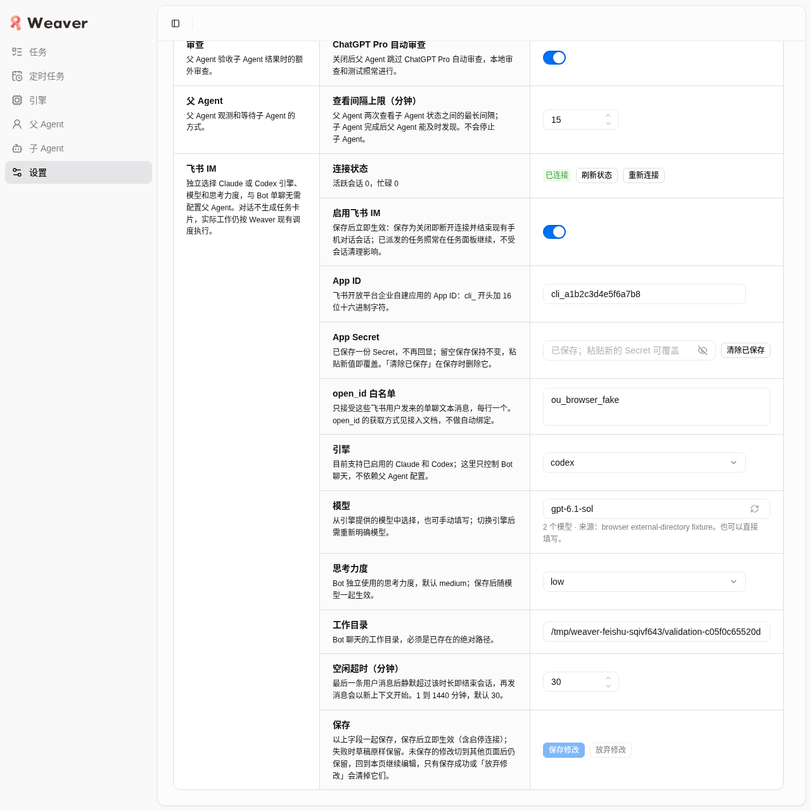
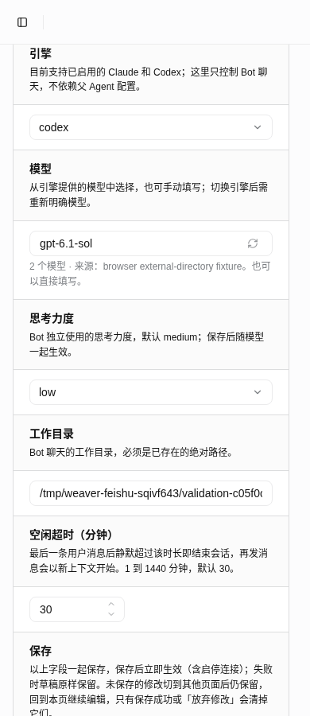
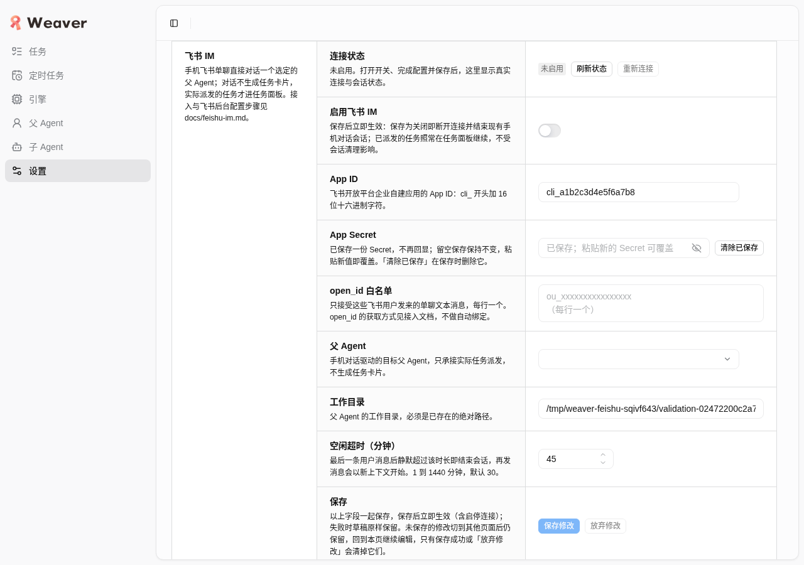
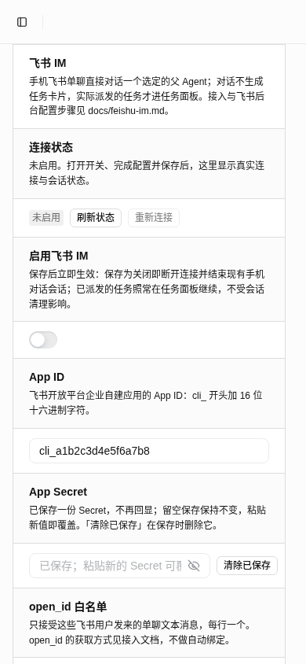
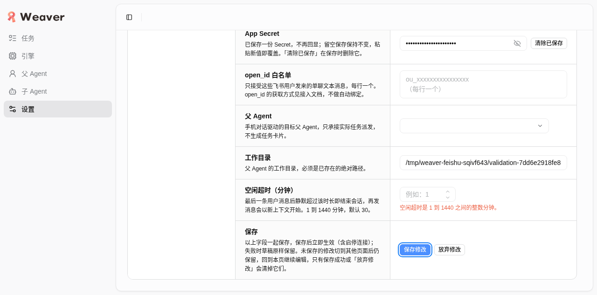
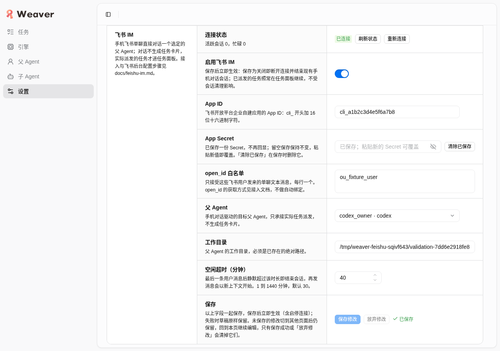
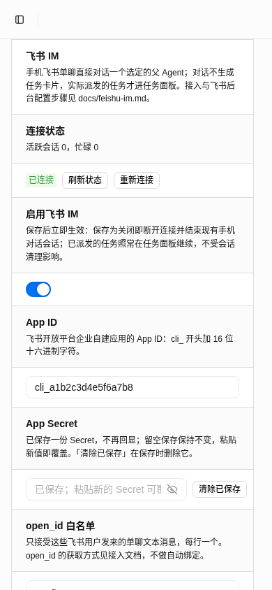

2026-10-21，本轮本地浏览器范围通过，未发现未解决的产品失败。真实Chrome+HTTP/RPC/持久化验证独立engine/model/effort，不依赖owner/worker profile；Codex / gpt-6.1-sol / low准确保存与重载。外部Channel与模型目录故障场景为fixture，不能替代手机或真实模型端到端验收。
固定base 3b5c2c97f0a8b577bb751b056a7aa28061217849，tree c05f0c65520d4de290b006b33b312fb392f38865，40项冻结源码哈希全部一致。Chrome156。实际URL http://127.0.0.1:38737/#/settings，本轮服务已释放。本轮最小脱敏机器证据。
| 结果 | 项目 | 实际检查 |
|---|---|---|
| 通过 | 独立三字段/low | 无owner或worker的私有实例中，Codex / gpt-6.1-sol / low、假凭据与合法目录保存成功，真实DTO重载仍low、idle30、connected，Secret只configured且输入清空。新空配置medium。 |
| 通过 | 模型与引擎切换 | 换Claude或Codex清空旧model，不暗选另一模型，合法力度保留；目录失败可手填并真实保存，刷新恢复；旧Claude目录晚到不覆盖Codex。目录fixture不证明真实模型支持。 |
| 通过 | 失效与字段恢复 | disabled/不支持引擎选项不可选；在私有policy停用Codex后，Bot仍可明确关闭保存，真实policyRollback恢复引擎后可重连。缺engine/model/effort、非法model/effort均字段报错。 |
| 通过 | 草稿/CAS/导航 | 三字段加Secret经手动刷新、32秒实际自动轮询、站内导航保持；关闭保护在任务页仍生效。外部真实RPC推进revision后，旧基线保存拒绝且草稿保留，明确强制载入清空全部草稿与过期错误。 |
| 通过 | 加载/故障/锁定 | 强制读和保存的真实响应延迟5秒时，ModelPicker输入及刷新按钮、三字段均锁定，模型原生:disabled与inert均为真。get/save/reconnect注入一次HTTP400拒绝后spinner归零并可重试；force失败保留草稿；晚旧读不覆盖新low保存。 |
| 通过 | 数字回归 | 真实Ctrl+A/Backspace清空、0、1441、1.5及Enter均保留错误且revision不升、不用旧30成功保存；放弃恢复30，1/1440/30准确保存。 |
| 通过 | 可访问性/布局/健康 | 引擎与力度键盘Space可打开，模型Tab到刷新按钮；所有label指向实际控件。1280和390无文档横向溢出，截图检查新三字段无遮挡。console无error/warn，正式artifact_errors=[]；两次真实HTTP400均预期CAS冲突，无未解释错误。 |
| 未验证 | 外部体验/主题 | 手机飞书收发、流式卡片、按钮与菜单点击、真实模型推理支持及当前部署状态未验证。app固定light，本轮不声称暗色通过。真实用户4737、配置/DB/备份均未触碰。 |
真实API/保存结果没有被mock。仅外部Channel与parent入口替换为本地fixture，模型目录交互的列表/延迟/失败在fetch边界注入；初期重载存在一次只读模型目录基准请求200，未据此证明模型可用，也未触发真实推理。目录fixture随后作为任务浏览器init脚本固定，页面重载前就就绪。get/save/reconnect的故障注入明确为浏览器传输边界的HTTP400，不是服务端真实报错；两次真实服务端400单独归因于主动制造的revision冲突。
最终模型字段gpt-6.1-sol、力度low、超时30、连接connected；私有policy owners/workers均0，外部send与parent调用均0。旧各轮owner/Pro结论仅作为历史，不自动扩展到本次独立参数改动；本包不更新owner-verification.json或当前部署配置。


专用scope dev-weaver-im-direct-browser-01a15cad.scope已停止，PID755049退出、38737端口关闭；专用session weaver-im-direct-01a15cad的Chrome已关闭，profile与私有dataDir已删除，完整临时采证、fixture与缓存已回收，仅保留本报告、新两图与最小JSON。共享服务/用户4737、真实配置与原持久backup保留。
本报告范围已通过：代码核对、浏览器验收与owner独立验证。同会话实际修正版Pro c10bbd10-9069-4d9a-94d9-26612d2a6d21明确通过，reply.final=true、完整回复已消费、archive stored且gaps为空。此前65857唯一not-started阻断已闭合。代码/UI通过不等于手机体验通过；下方实际启用记录来自owner安全proof，用户反馈流式慢仍在排查。
2026-10-21，本轮约定浏览器范围通过，未发现未解决的产品失败。上轮非法分钟数以旧值保存、放弃/载入未重置可见数字、成功载入后旧保存错误残留，均在固定源码上重新交互验证通过。
被测基础HEAD b54e425b3fda4b742945415a7b7195c1ca5dded6，固定tree 7dd6e2918fe8b5cc80cf8a81f345514a1cca0e33；冻结清单中的37项运行与原任务文件哈希一致；另2项仅测试枚举后来更新，固定快照未包含，不影响本轮被测运行文件。Chrome 156，真实URL http://127.0.0.1:43119/#/settings（本轮服务已释放）。
明确边界：HTTP、RPC、PolicyStore、ImService和renderer均真实；仅外部Channel与parent入口替换为fixture。手机飞书实链与真实模型链路未由本浏览器报告验证。owner另有独立验证不在此代为声明。
| 结果 | 验收内容 | 实际结果 |
|---|---|---|
| 通过 | 数值与整组提交 | 0、1441、小数1.5及真实键盘清空均保留字段错误且revision不提升；仅非法数字也触发草稿与关闭保护，Enter路径同样拒绝。1、1440、30均准确保存。 |
| 通过 | 放弃与强制恢复 | 0/1441/小数/空输入放弃后恢复已存30并清Secret；真实冲突后强制载入恢复40，非法0也恢复40；此前保存及字段错误清空。 |
| 通过 | 默认与持久化 | 全新隔离数据默认禁用、30分钟；禁用状态只填写workspace即可保存。假凭据、现有codex_owner和绝对workspace配置后开启、重连、关闭均为真实ImService状态；重载保持配置，Secret框清空。 |
| 通过 | Secret草稿与保护 | Secret-only手动刷新、32秒真实自动轮询、站内任务页再返回均保留Secret；草稿仍用修订7，外部推进修订后保存拒绝。离开设置页后beforeunload保护仍有效；保存/放弃/强制成功后解除。clearSecret挂起经刷新保留，关闭后明确清除使configured=false。 |
| 通过 | 异步和失败路径 | get/save/reconnect各注入一次浏览器HTTP400拒绝后可重试，spinner复位；强制读取失败草稿与关闭保护保留，重试成功；5秒强制读取期间全部字段锁定。旧真实读取响应延迟5秒，随后真实保存成功，晚到结果不覆盖新保存。 |
| 通过 | 其他字段 | 错误AppID、重复open_id、开启缺Secret均给字段错误。所有字段分组完整，标签for均指向实际控件，父Agent选择经键盘与显式选项完成。 |
| 通过 | 页面与运行健康 | 1280×900及390×844无文档横向溢出；真实截图人工检查可读。console无error/warn；正式采证artifact_errors=[]。记录到3次服务端HTTP400均为故意制造的revision冲突，无意外网络错误。 |
| 未执行 | 暗色与外部实链 | 项目既有ThemeProvider固定light，未执行暗色验收，不以媒体截图冒充。外部Channel/parent边界为fixture，手机飞书认证、真实消息/卡片与模型对话不在本浏览器验收范围。 |
以下由 owner 独立执行，浏览器验收 worker 仅核对安全结果文件；不冒充本轮浏览器实测。Pro 同一对话复审 663bd309 历史轮已明确未通过。当时唯一阻断：stop致命中断失败（interrupt ACK失败或缺少terminal）使父适配器关闭，service却仅凭取消意图保留旧父引用并继续；下一条排队/新消息先撞closed parent。该轮结论来自只读源码控制流复核；随后补修任务以真实子进程协议fixture复现4个失败并修复，其余finding已闭合。历史65857轮随后未通过，仅剩not-started CardKit stop；此项现已修复，最新c10bbd10已明确通过，确认指定两文件hash与service边界闭合；该轮只读核对，没有运行测试或手机实链。
| 验证 | 结果与边界 |
|---|---|
| 全套检查 | 最新owner独立npm run check：基线75a8db、tree402387431595d246835d7eb25847731fa016972a，1363/1363通过、fail/skip均0、typecheck/build及整体exit0。历史1341、1269、1252检查保留于安全JSON；全套测试由owner执行；最新Pro只读复审已通过，未将审查充作测试重跑。 |
| 最终版本对应 | 历史tree0fbc79da从1252检查树仅删除Claude fixture末尾一个额外换行，内部字节经owner比对并通过node --check，其余39项程序/依赖hash一致。历史基线03dcc21重导出的40项程序/依赖hash曾与0fbc79da相同。随后宿主baseline/runtime/scope及parent补修已有变化，不泛称产品/运行文件全部与7dd6相同；本次逐项确认IM设置四文件与api/client.ts哈希相同。最新HEAD485b0425、tree02472200c2a7由独立全套检查与新宿主smoke覆盖，报告提交tree可能再变。 |
| 真实Claude/Codex | 两引擎均完成口令→原上下文回忆→首delta后中断→立即原上下文回忆四轮序列；流式delta先于最终返回，取消拒绝与上下文保留均通过，会话全部closed。中断轮durationMs不是停止耗时，不据此声称取消延迟。 |
| 真实Agent→隔离CLI | 真实Codex工具调用隔离Weaver CLI，正确读回未放入prompt的随机值；task与owner均0，Agent和runtime已关闭。 |
| 生产Node真飞书连接 | 生产bundle实链connected→reconnect connected→disable disabled通过；task0、发送消息0、模型请求0，exit0、进程关闭、端口释放，未触共享服务。用户Secret不进入Git；本worker未读取凭据。此项只证明连接管理，未验证手机消息/卡片与手机驱动模型回复。 |
| 工程扫描及人工复核 | 最新全339文件scan exit0、errors0；119候选标记needs-review，owner逐项归属复核。本任务8条为静态HTML配色1条与7条沿用既有无alias相对导入，tsconfig/vite已核实；其余为baseline。Hook顺序、请求ref门控、标签、窄屏和键盘亦经owner审查，不以扫描exit0替代交互验收。 |
最小安全独立验证汇总记录版本、退出码、统计和资源收束，不含模型正文、原始日志、凭据或环境。补修任务4e20139f已合法派发并完成4src+3tests窄修；共享配置路由已恢复，不再是派发阻塞。本worker未修改共享policy。65857轮复审原fatal已闭合，但发现not-started CardKit stop路径；后续service/test两文件窄修完成。最新同对话Pro c10bbd10-9069-4d9a-94d9-26612d2a6d21已明确通过，原fatal与not-started代码阻断均闭合。本报告包按代码/UI核对范围收束；当前部署及持久资源由下方owner实际启用记录单独归因，本worker没有操作部署。
此前65857复审确认原致命中断分类已闭合，仅剩not-started CardKit stop问题；owner已完成service与im-service测试两文件窄修，其他IM源码与依赖未变。service SHA256 caf74a434adb7e068f9649a12479b7e0213ee6297faf536a98e557ecffde3cc2，测试 SHA256 cd5d9b99a27a4bad0963c92eb465330c7ec0a693263a848513fa60e5d4c7228e。
owner对固定tree40238743独立检查1363项通过；本worker仅核安全state/hash，未运行最新后端，也未在该树重跑浏览器。IM设置四文件与api/client.ts的5项哈希再次核对一致，因此保留7dd6完整UI证据及02472200最新宿主smoke各自原始base/tree；不得把它们改写为4023浏览器证据。
最新同会话Pro c10bbd10-9069-4d9a-94d9-26612d2a6d21已明确通过：指定两个完整hash一致，not-started/已提交与致命失败边界区分正确，新增回归源码覆盖旧反例，未放宽此前fatal分类。审查为只读，未执行测试、模型或飞书操作。真实配置“已保存但disabled、matcher关闭、未切换”仅是此前准备阶段的历史观测；当前已由owner实际切换并启用，详见独立启用记录。手机收发、平台流式卡片按钮及菜单仍未验。本报告不记录私有身份、AppID或Secret。
以下是owner实际执行与安全proof的记录，不是本worker新跑的浏览器、模型或飞书验收。同一4737用户服务已切换为已验收的版本化Node release并通过真实RPC启用。用户反馈流式回复慢，owner正在排查；尚无本轮脱敏性能证据，不能记为正常或通过。
| 范围 | 已确认事实与边界 |
|---|---|
| 当前启用配置 | RPC revision2→3，enabled=true、connected；Codex/codex_owner，唯一挑战确认账号1个，本repo工作目录，空闲30分钟，私有设置0600，Secret仅公开configured布尔。一次性身份监听已真实closed，不记录具体身份、AppID或Secret。 |
| 版本与服务 | 端口4737、owner观测MainPID697343；用户版本化release ~/.local/share/weaver/releases/20261021-feishu-402387431595，315dist与已验收tree逐字节一致。仅user-service drop-in换Node入口，旧binary与baseunit保留；不是另开同DB服务。本worker未执行切换。 |
| 持久数据保护 | 升级前owner使用SQLite一致性backup，quick_check=ok，备份在用户持久backups目录保留。schema9→11，zcode及旧历史快照匹配目标0；没有清理任务数据。切回旧binary不等于数据库自动降级，持久DB/设置/backup/release均不作为临时验收资源删除。 |
| 其他native任务 | 重启前managedWorkers=0；其他native任务数量前后均3，owner逐项核对保留且未因app exit误标失败。这里只存计数和nativeTasksPreserved=true，不复制任务IDs或业务内容。 |
| 应用权限核对 | owner只读application.get code0确认以Bot发消息、单聊读取、CardKit写入权限与card.action.trigger回调订阅。真实挑战已证明消息入站接收；metadata没有报告message/menu事件清单，不能由此推断机器人菜单已配置。 |
| 仍待手机实测 | 真实回复、首增量等待/完整流式体验、正文选项点击及机器人菜单仍未最终验收；用户所报流式慢保持待排查，不以connected、权限存在、协议fixture或1363测试推断体验正常。 |
| 资源处置 | 隔离验证scope/PID/端口/可丢弃数据已释放；真实用户服务因持续接收已授权单聊而保留4737，持久配置/DB/一致性backup/版本release保留。后续运行与排障由owner负责，本worker没有启动或清理线上资源。 |
最新全1363测试/typecheck/build与Pro c10bbd10的通过范围仍为已冻结代码。全面浏览器7dd6及宿主02472200 smoke保留原始base/tree；五个IM renderer/API hash复用只证明对应UI代码未变，不能冒充402387线上浏览器重验。安全汇总JSON仅记录布尔、计数与必要服务版本信息。
HEAD 485b0425fa4da9740d6fda462e704ee64697b2a7，固定tree 02472200c2a7cf332720e80879d02ae9d36c2a07。本worker在固定导出快照启动独占真实HTTP/RPC/存储/页面，只替换外部Channel与parent，全部凭据为fake。
全新隔离数据默认禁用、30分钟；真实保存后revision0→1、分钟45准确读回，Secret只公开configured且输入清空。新宿主sidebar任务/设置导航往返保留Secret草稿与原revision，离开设置页关闭保护有效，放弃清空。1280与390像素无横向文档溢出；console无error/warn、网络失败0、artifact_errors为空。
仅补宿主默认/保存/导航/窄屏集成；没有在最新宿主重跑32秒轮询或全部故障注入。此前全面浏览器证据继续作为IM设置文件未变范围的依据；后续parent/宿主变化由最新全套与独立复审验证。本轮安全证据。


本轮URL http://127.0.0.1:45087/#/settings；专用scope、PID576604、45087端口、Chrome/profile及私有data已精确释放，未触共享服务或真实凭据。本smoke只覆盖新宿主设置集成；最终代码复审结果见上方；当前部署另见owner实际启用记录，不将此历史smoke改写成线上浏览器验收。
非法0/1441时revision保持1且错误可见；真实键盘清空后revision保持6。合法1、1440、30分别准确读回。外部真实RPC制造冲突，旧基线保存被服务端拒绝；明确强制读取失败草稿保留，成功后数字恢复40、Secret清空、alert为空。普通自动轮询实际等待32秒，网络记录与草稿观测均保留。
工具校准：agent-browser的fill空串没有真正清空此数字控件，已改用Control+A/Backspace验证真实空框；未将该工具现象列为产品失败。读RPC原有瞬时网络恢复会自动重试，因此明确失败路径采用一次浏览器fetch的HTTP400拒绝，只注入传输故障，不伪造业务成功数据；测试后恢复原fetch。
最小脱敏证据JSON包含真实请求method/revision/status、console、逐项观测及artifact_errors。所有凭据为fake，附件中的Secret值仍已脱敏，不包含HAR或原始凭据日志。



Owner安全交接确认：临时明文Secret及live-bundle/agent-cli-probe凭据数据已精确删除，自有验证units均inactive，原共享数据与服务保留。本次只更新报告与安全JSON，无app/browser/Chrome启动，无产品或policy写入。
专用Chrome session weaver-feishu-01a15cad已关闭，专用profile已删除；专用scope dev-weaver-feishu-browser-01a15cad.scope已停止，PID260651与43119端口已释放。仅回收本轮browser/data、一次性完整采证现场及未引用旧截图；保留本报告、最小JSON与3张安全截图。共享服务、浏览器、开发库、固定源码快照及owner检查unit未动；未提交或推送。